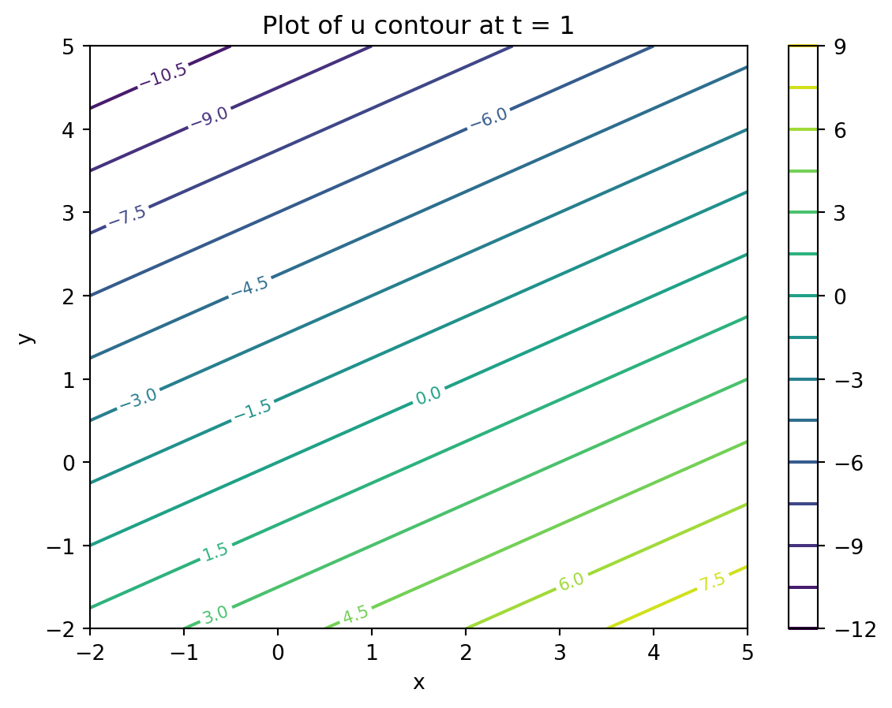
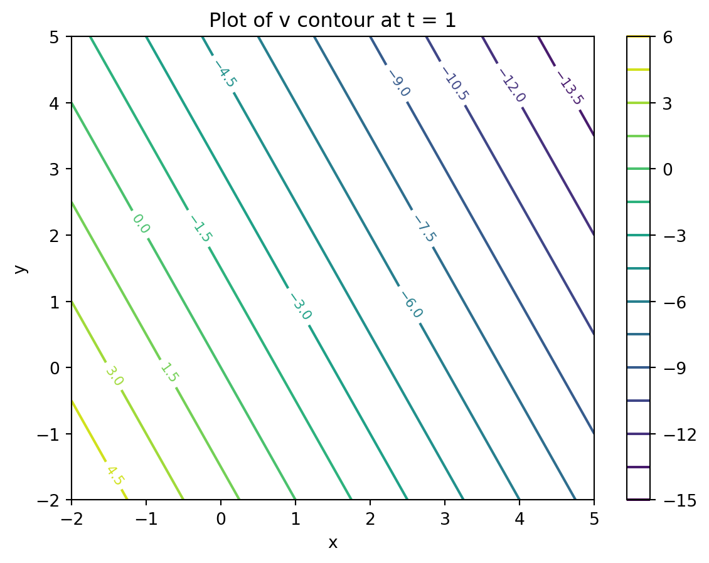
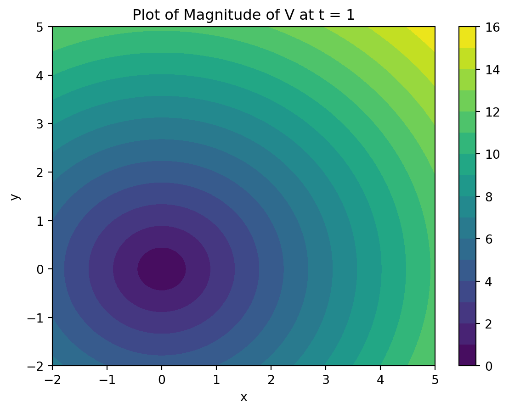
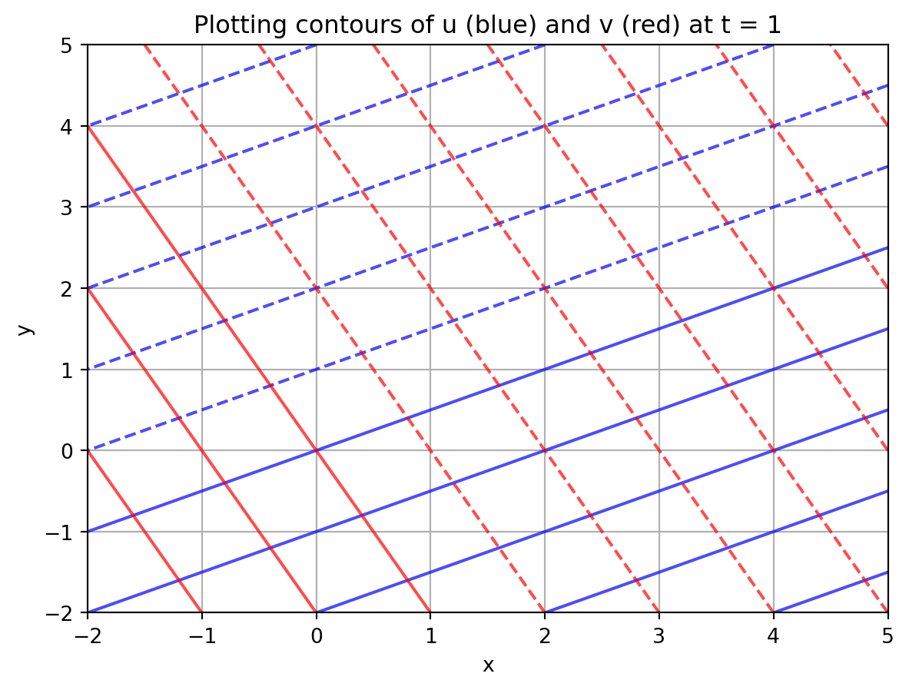
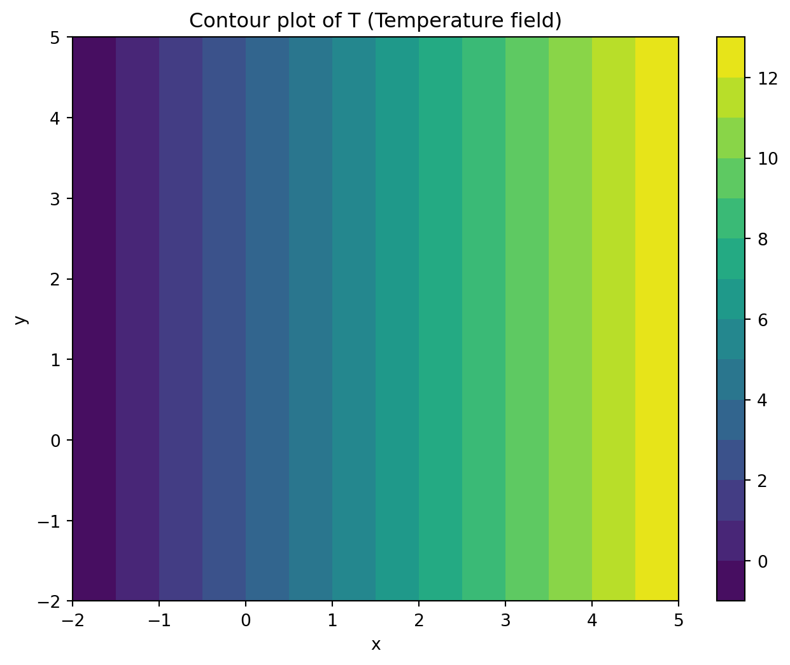

import numpy as np
import matplotlib.pyplot as plt
from scipy.optimize import fsolve
from sympy import symbols, diff, simplify, sqrt as sym_sqrt, lambdifyAerofields
Examples in Symbolic Programming using MATLAB Field Descrition
A 2D unsteady velocity field \(u(x, y, t)=(x-2 y) t \\ v(x, y, t)=-(y+2 x) t\)
This follows directly from the definition of velocity: \(velocity = \frac{d(position)}{dt}\)
Thus, \(u = \frac{dx}{dt}, \\ v= \frac{dy}{dt}.\)
with \(\frac{d u}{d t}=\frac{\partial u}{\partial x} \frac{d x}{d t}+\frac{\partial u}{\partial y} \frac{d y}{d t}+\frac{\partial u}{\partial t}\). Thus the acceleration component in the x direction is given by: \(\frac{d u}{d t}:=a_x=\frac{\partial u}{\partial x} \frac{d x}{d t}+\frac{\partial u}{\partial y} \frac{d y}{d t}+\frac{\partial u}{\partial t} = u \frac{\partial u}{\partial x}+v \frac{\partial u}{\partial y}+\frac{\partial u}{\partial t}\)
and the acceleration component in the y direction is given by:
\(\frac{d v}{d t}:=a_y=\frac{\partial v}{\partial x} \frac{d x}{d t}+\frac{\partial v}{\partial y} \frac{d y}{d t}+\frac{\partial v}{\partial t} = u \frac{\partial v}{\partial x}+v \frac{\partial v}{\partial y}+\frac{\partial v}{\partial t}\)
the temperature field
does not depend on t neither on y !!!
- Plot the velocity components at t = 1
- Plot the magnitude of the velocity at t = 1
- Calculate the acceleration components
The problem introduces students to (i) Taking derivatives (ii) Contour plots with ezcontour (iii) Calculating substantial derivatives
# Clear any existing plots
plt.close('all')
# Define symbolic variables
x, y, t = symbols('x y t', real=True)
# Define u, v, T
U = x*t - 2*y*t
V = -y*t - 2*x*t
T = 2*x + 3
print('\n\n')
# Substitute for t = 1
U1 = U.subs(t, 1)
V1 = V.subs(t, 1)
print(f'U at t=1: {U1}')
print(f'V at t=1: {V1}')
print('\n\n')
# Convert symbolic expressions to numpy functions
U1_func = lambdify((x, y), U1, 'numpy')
V1_func = lambdify((x, y), V1, 'numpy')
mag_V_func = lambdify((x, y), sym_sqrt(U1**2 + V1**2), 'numpy')
# Create grid for plotting
X = np.linspace(-2, 5, 100)
Y = np.linspace(-2, 5, 100)
X_grid, Y_grid = np.meshgrid(X, Y)
# Plot contour of u = constant at t = 1
plt.figure()
U_grid = U1_func(X_grid, Y_grid)
contour = plt.contour(X_grid, Y_grid, U_grid, levels=15)
plt.clabel(contour, inline=True, fontsize=8)
plt.colorbar()
plt.xlabel('x')
plt.ylabel('y')
plt.title('Plot of u contour at t = 1')
plt.show()
# Plot contour of v at t = 1
plt.figure()
V_grid = V1_func(X_grid, Y_grid)
contour = plt.contour(X_grid, Y_grid, V_grid, levels=15)
plt.clabel(contour, inline=True, fontsize=8)
plt.colorbar()
plt.xlabel('x')
plt.ylabel('y')
plt.title('Plot of v contour at t = 1')
plt.show()
# Plot magnitude of velocity at t = 1
plt.figure()
mag_V_grid = mag_V_func(X_grid, Y_grid)
contourf = plt.contourf(X_grid, Y_grid, mag_V_grid, levels=15, cmap='viridis')
plt.colorbar(contourf)
plt.xlabel('x')
plt.ylabel('y')
plt.title('Plot of Magnitude of V at t = 1')
plt.show()
# Plot both u and v contours on the same figure
plt.figure()
plt.contour(X_grid, Y_grid, U_grid, levels=10, colors='blue', alpha=0.7)
plt.contour(X_grid, Y_grid, V_grid, levels=10, colors='red', alpha=0.7)
plt.grid()
plt.xlabel('x')
plt.ylabel('y')
plt.title('Plotting contours of u (blue) and v (red) at t = 1')
plt.show()
print('\n\n')
# Find derivatives of u with respect to x, y, t
Ux = diff(U, x)
Uy = diff(U, y)
Ut = diff(U, t)
print(f'∂u/∂x = {Ux}')
print(f'∂u/∂y = {Uy}')
print(f'∂u/∂t = {Ut}')
print('\n\n')
# Acceleration in x direction
ax = U*Ux + V*Uy + Ut
print(f'ax (before simplification): {ax}')
print('\n\n')
# Simplify acceleration
ax = simplify(ax)
print(f'ax (simplified): {ax}')
print('\n\n')
# Same for v
Vx = diff(V, x)
Vy = diff(V, y)
Vt = diff(V, t)
print(f'∂v/∂x = {Vx}')
print(f'∂v/∂y = {Vy}')
print(f'∂v/∂t = {Vt}')
print('\n\n')
# Acceleration in y direction
ay = U*Vx + V*Vy + Vt
print(f'ay (before simplification): {ay}')
print('\n\n')
ay = simplify(ay)
print(f'ay (simplified): {ay}')
print('\n\n')
# Substitute x=1, y=2, t=1
axV = ax.subs({x: 1, y: 2, t: 1})
ayV = ay.subs({x: 1, y: 2, t: 1})
print(f'ax at (x=1, y=2, t=1): {axV}')
print(f'ay at (x=1, y=2, t=1): {ayV}')
print('\n\n')
# Temperature analysis
T1 = T.subs(t, 1) # Temperature is independent of t, but included for consistency
print(f'T at t=1: {T1}')
print('\n\n')
# Create 2D grid for temperature contour plot
fig, ax = plt.subplots(figsize=(8, 6))
X = np.linspace(-2, 5, 100)
Y = np.linspace(-2, 5, 100)
X_grid, Y_grid = np.meshgrid(X, Y)
T_grid = 2*X_grid + 3
contourf = ax.contourf(X_grid, Y_grid, T_grid, levels=15, cmap='viridis')
ax.set_xlabel('x')
ax.set_ylabel('y')
ax.set_title('Contour plot of T (Temperature field)')
cbar = plt.colorbar(contourf, ax=ax)
plt.show()
U at t=1: x - 2*y
V at t=1: -2*x - y




∂u/∂x = t
∂u/∂y = -2*t
∂u/∂t = x - 2*y
ax (before simplification): -2*t*(-2*t*x - t*y) + t*(t*x - 2*t*y) + x - 2*y
ax (simplified): 5*t**2*x + x - 2*y
∂v/∂x = -2*t
∂v/∂y = -t
∂v/∂t = -2*x - y
ay (before simplification): -t*(-2*t*x - t*y) - 2*t*(t*x - 2*t*y) - 2*x - y
ay (simplified): 5*t**2*y - 2*x - y
ax at (x=1, y=2, t=1): 2
ay at (x=1, y=2, t=1): 6
T at t=1: 2*x + 3
